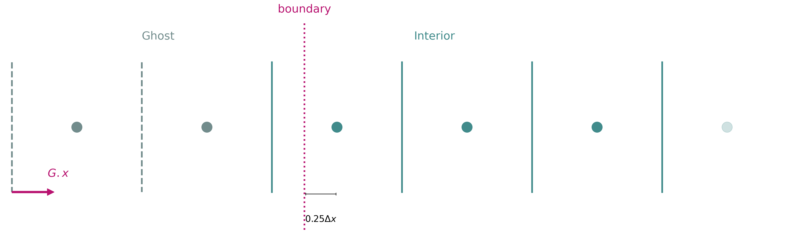
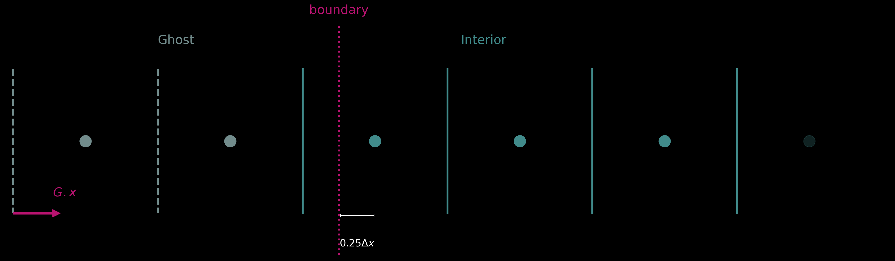
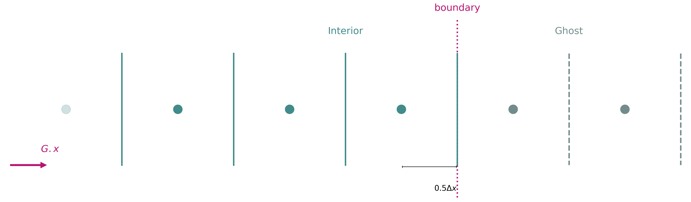
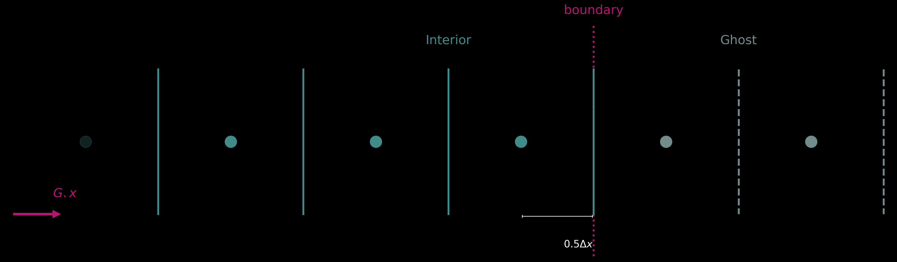

Boundary Conditions¶
By default, grids use periodic boundary conditions — field values wrap around from one edge of the domain to the other. To impose non-periodic boundary conditions, the physical boundary must be inset from the outermost grid nodes, leaving nodes outside the domain that can act as ghost nodes.
Boundary Placement¶
Important
The resolution (symbolically: G.Nx, G.Ny ..., concrete: shape) corresponds
to the full number of values in the fields, which includes ghost cells when
the boundaries argument sets the boundaries inwards.
sofia automatically adjusts the spacings G.dx, G.dy, ... so that the domain
extent aligns exactly with the locations of the boundaries. See the examples below
for more detail.
The boundaries argument of a Grid specifies where the physical domain
edges sit in index space, as insets measured from the first and last grid nodes.
Each dimension is given either (assuming N is the resolution in that dimension,
such that the first node lies at i=0 and the last at i=N-1):
a single value, for a periodic dimension. A value
fplaces the domain edges ati = fandi = N + f, so the second edge lies one node past the last and wraps around.a pair of values
(lower, upper), for a non-periodic dimension. The boundaries are then ati = lowerandi = N - 1 + upper. Insets point inward, solowermust be>= 0anduppermust be<= 0.
This diagram shows the meaning of the two-value input boundaries=(a,b):
- a is the distance (in units of dx) from first
cell center, to the right
- b is the distance (in units of dx) from last
cell center, to the left
left bnd right bnd
| |
+-------+-----|-+-------+-------+----|--+-------+
: : | : : : | : :
: o : o | : o : o : o| : o :
: : | : : : | : :
+-------+-----|-+-------+-------+----|--+-------+
|-------->| |<-----|
a * dx b * dx
The same specification is applied to every dimension unless a sequence of per-dimension specifications is given, one per dimension:
>>> from sofia import Grid
>>> G = Grid(ndim=2) # periodic in x and y
>>> G = Grid(ndim=2, boundaries=(1, -1)) # non-periodic in x and y
>>> G = Grid(ndim=2, boundaries=((1, -1), (0,))) # non-periodic in x, periodic in y
# Quick inspection of the setup
>>> from sofia import Field, Staggered
>>> from sofia.pde import eval_expr
# Periodic - boundary on 0
# Boundary in first field value; last field value will be
# 1.0 - G.dx with G.x = (1.0-0.0)/G.Nx
>>> G = Grid(ndim=1)
>>> specs = {G: dict(shape=6, extent=(0.0, 1.0))}
>>> a = Field('a', G, Staggered.CENTER)
>>> eval_expr(a << G.x, specs).round(2)
Array([0. , 0.17, 0.33, 0.5 , 0.67, 0.83], dtype=float64)
# Spacing is simply L/N, to make sure the domain is periodic
# and the last field value lands on -dx from the boundary
>>> G.dx.doit()
G.Lx/G.Nx
# Non-periodic - boundaries on (1, -1)
# Boundary in second field value (cell-centered field with
# boundary on the second cell center) and in second-to-last
# field value
# The first and last field values fall outside of the domain
# and are considered as ghost cells
>>> G = Grid(ndim=1, boundaries=(1,-1))
>>> specs = {G: dict(shape=6, extent=(0.0, 1.0))}
>>> a = Field('a', G, Staggered.CENTER)
>>> eval_expr(a << G.x, specs).round(2)
Array([-0.33, 0. , 0.33, 0.67, 1. , 1.33], dtype=float64)
# The default non-periodic spacing would be L/(N-1) to make the
# the right boundary coincide with the last field value, but now
# we have 2 ghost cells and the spacing is adjusted accordingly:
>>> G.dx.doit()
G.Lx/(G.Nx - 3)
# Non-periodic - boundaries on (1, -0.5)
# Boundary in second field value (cell-centered field with
# boundary on the second cell center) and halfway in between
# last two field value
# The first and last field values fall outside of the domain
# and are considered as ghost cells
>>> G = Grid(ndim=1, boundaries=(1,-0.5))
>>> specs = {G: dict(shape=6, extent=(0.0, 1.0))}
>>> a = Field('a', G, Staggered.CENTER)
>>> eval_expr(a << G.x, specs).round(2)
Array([-0.29, 0. , 0.29, 0.57, 0.86, 1.14], dtype=float64)
>>> G.dx.doit()
G.Lx/(G.Nx - 2.5)
|
Periodic |
Spacing |
Left boundary |
Left ghost cells |
Right boundary |
Right ghost cells |
|---|---|---|---|---|---|---|
|
Yes |
|
|
0 |
|
0 |
|
Yes |
|
|
0 |
|
0 |
|
No |
|
|
1 |
|
1 |
|
No |
|
|
1 |
|
1 |
|
No |
|
|
3 |
|
2 |
Insets do not need to be integers. An integer inset places the boundary exactly on a node, while a half-integer inset places it midway between two nodes — that is, on a cell face for cell-centred fields.
Any node lying outside the physical domain is a ghost node. The number of ghost
nodes per side is therefore determined by the insets: an inset of d leaves
ceil(d) nodes outside the domain. A specification of (0.5, -2.5) leaves one
ghost node at the lower edge and three at the upper edge.
There must be enough ghost nodes to support the finite-difference stencils used
near the edges, usually at least discretisation_order - 1 per side, though
fewer may suffice if one-sided stencils are used.
Note
The total number of points per dimension, Grid.Ns, includes both interior and ghost cells.
Example
For a visual representation of the boundaries setup, sofia.pde.drawing.draw_grid()
can be used:
from sofia import Grid, Field
from sofia.pde.drawing import draw_grid
G = Grid(ndim=1, boundaries=((1.25, -1.5),))
draw_grid(G, edge="start")
draw_grid(G, edge="end")
{kind=link}

{kind=link}

{kind=link}

{kind=link}

A 1D grid with 2 ghost cells and boundaries set to 0.25 and 0.5 for the left and right, respectively.¶
Boundary Specification¶
Boundary conditions can be defined using the pde.apply_boundary_conditions() function.
The simplest version of this function takes as input a tuple of pairs, each specifying a boundary condition as (condition, location),
and returns a symbolic expression that combines the original interior field and equations that enforce the specified boundary conditions at the boundaries.
The condition specifies either the value of a Field (Dirichlet-type conditions) or its derivative (Neumann-type conditions), and the location
the coordinate where the boundary condition takes effect. Both are specified via Sympy expressions. For instance, for Field u on Grid G:
>>> import sympy as sp
>>> from sofia import Grid, Field
>>> from sofia.pde import diff, apply_boundary_conditions
>>> G = Grid(ndim=1, boundaries=(1, -1))
>>> u = Field("u", G)
>>> bcs = (
... (sp.Eq(u, 1), sp.Eq(G.x, G.DomainStart)),
... (sp.Eq(diff(u, G.x), 0), sp.Eq(G.x, G.DomainEnd)),
... )
>>> apply_boundary_conditions(bcs)
Output:
Piecewise(
(Interpolation(u, location=G.x0, value=1, coordinate=global.x, is_left=True), G.x0 + 0.01*G.dx >= global.x),
(Interpolation(u, location=G.Lx + G.x0, value=0, coordinate=global.x, is_left=False, mirror=True), G.Lx + G.x0 + 0.01*G.dx < global.x),
(u, True)
)
Here we used the convenient shorthands Grid.DomainStart and Grid.DomainEnd to reference the start and end of grid domain.
Interpolation is a Sympy expression that is used to perform interpolations of values into ghost cells in order to
set boundary conditions. For full documentation of the class see the Interpolation API documentation.
Note
If periodic boundary conditions are the desired behaviour, no boundary specification is needed (and no ghost cells should be used) — this is the default.
Complicated Boundary Specifications¶
For more complicated boundary conditions, for instance when we wish to impose a condition at a different location to
where we switch to the expression derived from that condition (e.g. an extrapolation towards a Dirichlet value), boundary
conditions can be specified using dicts of type BoundarySpec, which has the following fields:
coordinate: the grid coordinate along which the boundary applies (e.g.,
Grid.xorGrid.y).value: the numerical or symbolic value enforced at the boundary.
kind: either
"dirichlet"for fixed value or"neumann"for fixed derivative.location: boundary location in coordinate space.
side:
"left"or"right", indicating which boundary the condition applies to. Can be omitted, in which case it is inferred from thelocationand grid domain edges.switch_location: location where the resulting expression should switch between original field and interpolation. If omitted, the
locationattribute is used.flatten: if True, the interpolation is fixed to constant
valuebeyond the setlocation.
Example implementation for field u:
>>> bcs = (
... {
... "value": 2,
... "coordinate": G.x,
... "kind": "dirichlet",
... "side": "left",
... "location": G.DomainStart,
... "switch_location": 0,
... },
... {
... "value": 0,
... "coordinate": G.x,
... "kind": "neumann",
... "side": "right",
... "location": G.DomainEnd,
... "switch_location": 1,
... },
... )
>>> apply_boundary_conditions(bcs, field=u)
Output:
Piecewise(
(Interpolation(u, location=G.x0, value=2, coordinate=global.x, is_left=True), 0.01*G.dx >= global.x),
(Interpolation(u, location=G.Lx + G.x0, value=0, coordinate=global.x, is_left=False, mirror=True), 0.01*G.dx < global.x - 1),
(u, True)
)